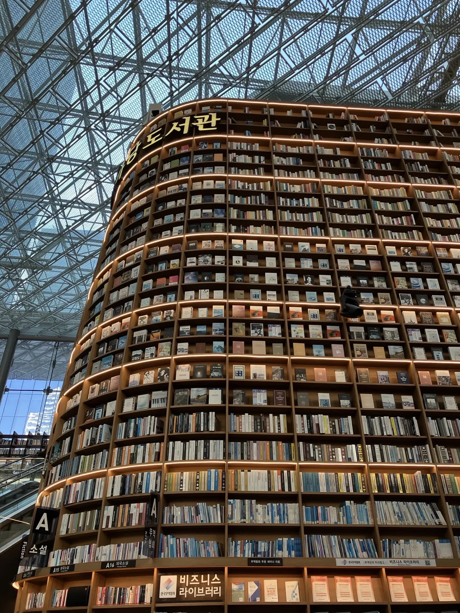

旅行中，留一個下午給自己

旅行讓我有機會走進別人的日常，看看不同地方的人怎麼生活。
有時候，只是在一整面書牆前停一會兒，或找間咖啡館坐下，慢慢喝完一杯咖啡。
那個下午好像什麼都沒做。回來以後，卻還記得抬頭看見的光，和那時難得悠閒的心情。

旅行讓我有機會走進別人的日常，看看不同地方的人怎麼生活。
有時候，只是在一整面書牆前停一會兒，或找間咖啡館坐下，慢慢喝完一杯咖啡。
那個下午好像什麼都沒做。回來以後，卻還記得抬頭看見的光，和那時難得悠閒的心情。